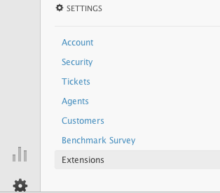
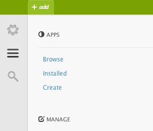
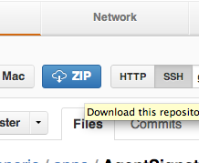

Classic Widgets
OverviewThese are the old type of Zendesk apps; they are not used in the New Zendesk (Lotus). We call them widgets to distinguish them. They are still used in the end-user facing interface, which is going to remain on the Classic Zendesk framework until the release of Help Center.
Whenever you would like to customize the user-facing web portal, you use a Classic Widget. They allow a great deal of customizability and are very easy to copy and paste from one place to another. In the agent interface, you create them by clicking on Settings >> Extensions >> Add Widget.
Step-by-Step1.
Assess the needs of your Zendesk account
If you are aiming to make a change to the appearance or the functionality of the end-user interface, then widgets are the way to go. If your problem is a styling problem, you will want to inject CSS with a CSS widget. If you want to change the functionality of the page or add or change elements (text, logos, links, etc.), then you will use a JavaScript widget.
2.
Select an app that suits your needs. These are some common examples (requires github membership):
3.
Copy the code from the widget and paste it into the account.
Go to Settings >> Extensions in the agent interface and click on "Add Widget" on the right of the widget list. Choose a type of widget - all of the examples here are JavaScript widgets, so for them you will choose "Global JavaScript." Other common cases include "Global CSS" widgets for styling, and "Custom Widgets" for displaying text, images, buttons or links on the end user interface.
A text area will open up, where you can paste in the code for your widget. Then, select the appropriate visibility from the drop-down ("anyone can see", "agents only" etc.) and then select "Create Widget" at the bottom and hit Save. That's really it! Now you may immediately see your changes live on the site.
Public Apps for Lotus
OverviewThese are apps that can already be found in the Zendesk App Store. That means, in the agent interface, you can find them by going to Settings >> Apps >>Browse, and they offer a great deal of functionality with which to extend your Zendesk.
Step-by-Step1.
Find the app that suits your needs.
In the agent interface, navigate to Settings >> Apps >> Browse and you will see a list of all of the available apps that have been approved for the App Store. A lot of these are integrations, which means tools for pulling in or sending out information from other services that you might be using to complement your Zendesk.
Others are convenient extensions of Zendesk's functionality - this is where you'll find apps that display extra information in the sidebar next to a view of a ticket, such as user info, links, and other useful information. Hovering over each icon reveals a short description of what each one does.
2.
Install and configure your app.
This is an especially simple process for public apps - all the hard work is already done for you! On hovering over the app you want, click on 'Install' and a settings page will usually pop up. Here you can enter in whatever details make the app right for you, and then click on "Install." That's it, you're done!
Private Apps for Lotus
OverviewPrivate Apps for Lotus are apps that have been developed by our Client Services engineers, which have been tested and made available internally but have not gone through the app approval process that would put them into the Zendesk App Store. These are the "lab" offerings, unofficial and to be used at one's own risk.
Step-by-Step1.
See if an app already exists for what you're trying to do.
Here is a collection of apps that are a part of our Zendesk Labs collection:
Display
Comments
Ticket Creation
Finding Data
If you are interested in any of the above plugins but unable to access the source code, please contact the Zendesk Services team for assistance. If you would like to create your own apps for Zendesk, Go here for more information on how to do so.
2.
Download and customize the app.
If the code is hosted on github, click on the "zip" button on its page to download it as a compressed (zip) file. When it downloads, open it to "expand" the file, and save it to somewhere accessable. On the github page, most apps have a "Readme" that explains what parts of the code you have to edit in order to make it work for you. Otherwise, look for comments in the code (lines preceeded by "//" and grayed out in a code editor) that tell you what must be changed. Make any changes necessary and save the app again.
3.
Upload it into your Zendesk Account
Now, right click on the app folder that you just changed, and select "Compress" from the menu. This creates another zip, or compressed, file. Now go into Zendesk, click on Settings >> Apps >> Create, and click on "Create a new app." Give it a name and description, and then upload the zip file that you just created and hit "Save."